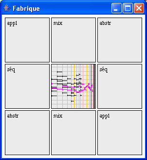

La fabrique donne un accès différent aux règles de construction définies dans Elody. On commence par placer un objet dans la case du milieu, un second objet doit être placé dans une des huit cases adjacentes. En fonction de la case utilisée, la construction résultante sera une nouvelle Séquence, un Mixage, une Abstraction ou une Application. L'objet résultant reste constamment dans la case centrale.
Par exemple pour construire une nouvelle séquence SÉQ A B, on place en premier l'objet A dans la case centrale, ensuite l'objet B dans la case Séq de droite, le résultat SÉQ AB se trouve dans la case centrale.